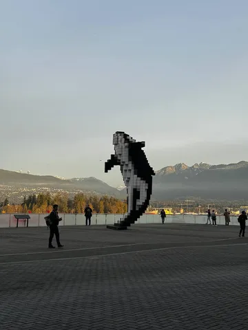
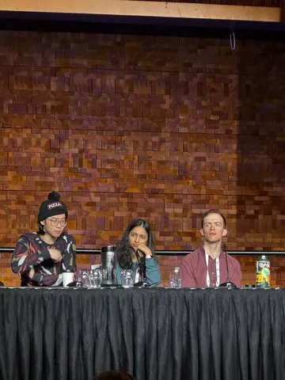
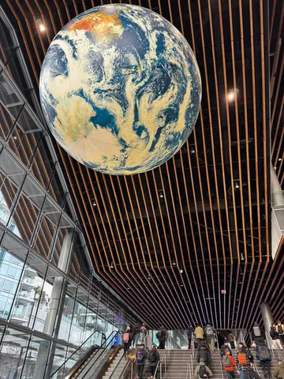

На конференции сейчас находится Катя Серажим, руководитель управления качества поиска. Она поделилась впечатлениями от выступлений и поговорила с некоторыми участниками. Слово Кате.
Понравился доклад от Waymo: AI for Autonomous Driving at Scale. Они обзорно рассказали про свой стек: используют трансформеры, пытаются создать собственную Foundation-модель для автономных машин и интегрируют VLM для разметки. Докладчик, правда, больше «лицо» проекта, а за подробностями отсылает к команде.
Интересный туториал Opening the Language Model Pipeline: A Tutorial on Data Preparation, Model Training, and Adaptation — с практическими советами по обучению LLM. Любопытно, что некоторые их выводы сходятся с нашими: например, 10k примеров для SFT (Supervised Fine-Tuning) и 100k для обучения с подкреплением по вознаграждению (Reward) оказались разумными цифрами.
А ещё пообщалась на экспо с исследователями из разных компаний и собрала немного любопытного:⚪️ Ресёрчер из Facebook поделился, что компания всё активнее вкладывается в обучение с подкреплением (RL). Считают, что задача претрейна уже решена, и теперь важно оптимизировать последовательность обучения (RS, DPO, PPO). Используют синтетику, меняя инстракты: например, из диалога о физике «делают» диалог о биологии.⚪️ А вот Google, как оказалось, по-прежнему ориентированы на улучшение результатов через претрейн. Говорят, что их новая модель не уступает на некоторых бенчмарках o1 как раз благодаря качественному предобучению.
Продолжаем следить за NeurIPS, будем делиться самым интересным.
ML Underhood
#YaNeurIPS
